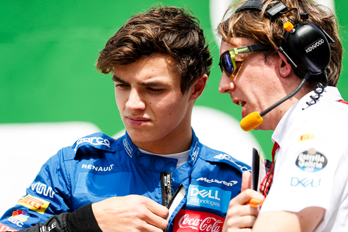
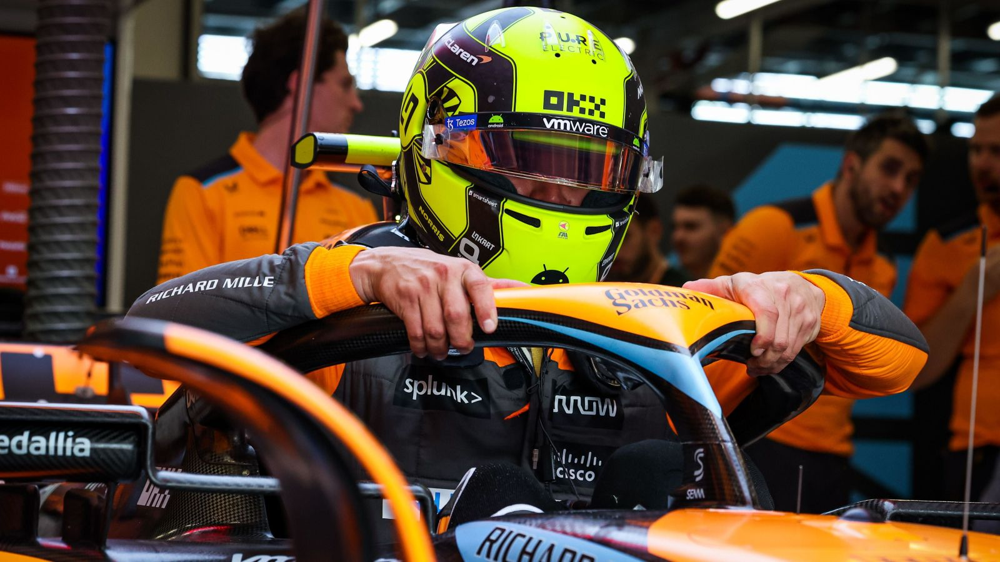
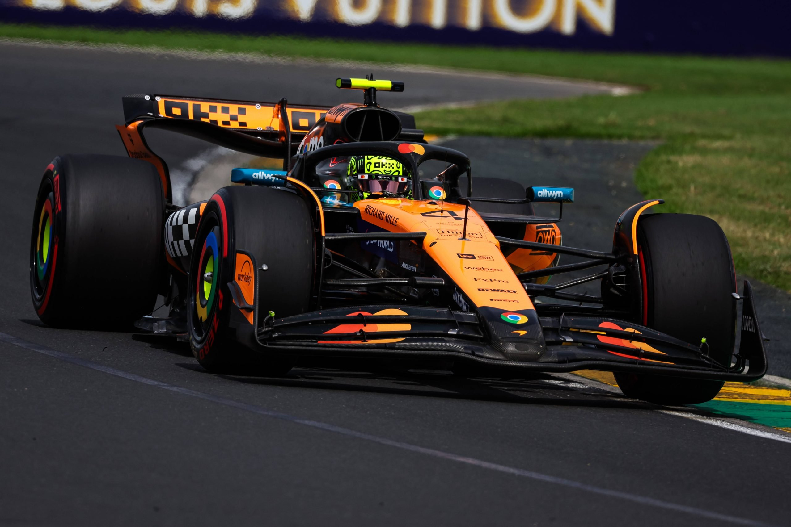

.png)
Lando Norris – Last Lap Lando
Lando Norris, nato a Bristol nel 1999, è uno dei piloti più giovani e talentuosi della griglia. Dopo aver scalato le serie minori con grande velocità, ha debuttato in Formula 1 nel 2019 con la McLaren, diventando rapidamente uno dei volti più amati del paddock.
Esordio in Formula 1 con McLaren
Dopo una stagione dominante in Formula 2 nel 2018, Norris è stato promosso in F1 da McLaren nel 2019. Fin dall’inizio ha mostrato grande maturità, velocità in qualifica e costanza in gara, conquistando punti importanti e duelli memorabili.
Le Prime Pole e i Podii

Lando ha ottenuto il suo primo podio nel 2020 al GP d’Austria. Nel 2021, ha firmato la sua prima pole position in Russia, sfiorando la vittoria in condizioni difficili. La sua crescita ha confermato il suo status di futuro campione del mondo.
2023–2024: McLaren Rinasce
Dopo un inizio lento, McLaren è tornata competitiva e Norris ha brillato. Ha ottenuto diversi podii e battaglie serrate con Verstappen e altri top driver, diventando un contendente regolare nella lotta per il podio.
2024: Prime Vittorie e Vicecampione del Mondo

Nel 2024, Norris ha conquistato le sue prime vittorie in Formula 1, trionfando nei Gran Premi di Miami, Silverstone, Singapore e Abu Dhabi. Questi successi hanno contribuito alla vittoria del titolo costruttori per McLaren, il primo dal 1998. Norris ha concluso la stagione come vicecampione del mondo, dietro a Max Verstappen.
2025: Leader del Campionato
Nel 2025, Norris ha iniziato la stagione con una vittoria in Australia, seguita da podi in Cina, Giappone e Bahrain. Nonostante alcune difficoltà, come l'incidente nelle qualifiche in Arabia Saudita, mantiene la leadership nel campionato piloti, con McLaren al comando della classifica costruttori.
I Caschi Più Iconici di Lando Norris
Casco 2020 - Silverstone GP
Speciale Monaco 2021 – Colori retro
Casco 2024 – Fluorescente personalizzato